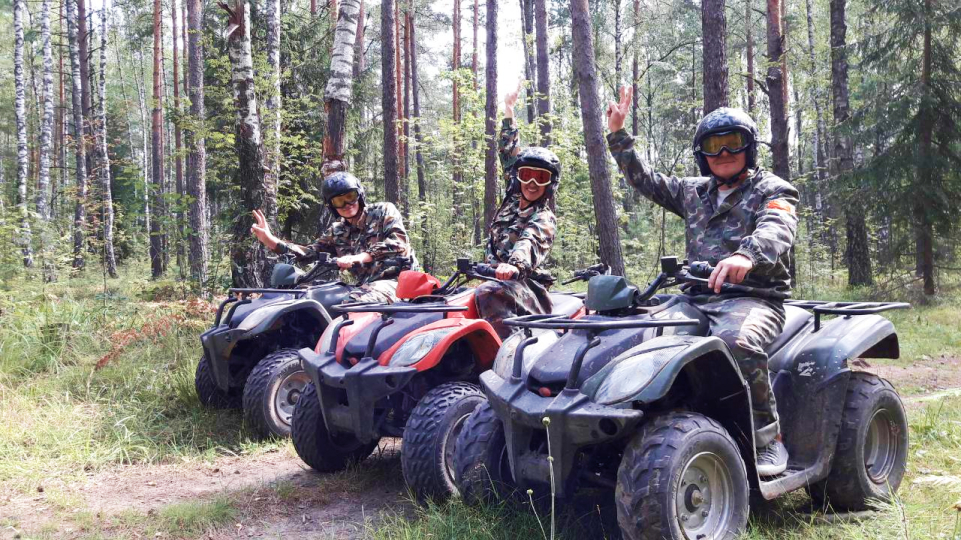

Уникальность маршрута состоит в его великолепии и живописности: хитросплетение лесных дорог в самой чаще, переезд огромного количества препятствий, посещение великолепных водоемов с возможностью отдохнуть и искупаться ( в зависимости от погоды).
Катание на квадроциклах происходит по маршруту, разработаному таким образом, что не оставит равнодушными ни водителя, ни пассажира. Тур прекрасно подойдет для людей, любящих активный отдых и желающих провести незабываемый отдых на свежем воздухе. Постоянно меняющийся ландшафт не даст скучать даже самому избирательному гостю. А наша техника и профессиональные инструктора сделают Вашу поездку максимально интересной и безопасной. Если вы хотите порадовать близкого человека, компания ATV-prokat предлагает купить сертификат на квадроцикл в подарок.
